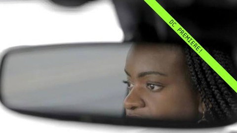

About the film

A LEAK IN PARADISE follows Swiss whistleblower Rudolf Elmer, a former senior banking executive who first leaked highly secretive banking data to WikiLeaks. Elmer faced criminal prosecution at home and became a social outcast, but his disclosures unleashed a torrent of investigative reporting on the vast sums hidden away in secret bank accounts and tax havens across the globe. They also prompted demands from Washington for greater transparency at Swiss banks.
At the festival
- 2016 DC Premiere · Friday, October 7, 2016 · 3:30 PM · National Portrait GalleryPost-screening discussion to follow with: David LeLoup, director, A LEAK IN PARADISE; Eric Lipton, journalist, The New York Times; Rudolf Elmer, film subject.
Sessions about this film
- 2016 · Fri Oct 7 · 1:45 PMPanelSpilling the Secrets of Secrecy JurisdictionsElisabeth Bumiller, Jake Bernstein, Catherine Dunn, Marina Walker Guevara, David LeLoup
More films on these topics
 The Panama PapersAlex Winter2018 · 100 min
The Panama PapersAlex Winter2018 · 100 min Deep WebAlex Winter2015 · 86 min
Deep WebAlex Winter2015 · 86 min The Sludge WarGalassia Grassetto2026 · 80 min
The Sludge WarGalassia Grassetto2026 · 80 min Kikuyu LandAndrew H. Brown, Bea Wangondu2026 · 93 min
Kikuyu LandAndrew H. Brown, Bea Wangondu2026 · 93 min
My NDAJuliane Dressner, Miriam Shor2026 · 101 min The Black SwanMads Brügger2025 · 90 min
The Black SwanMads Brügger2025 · 90 min